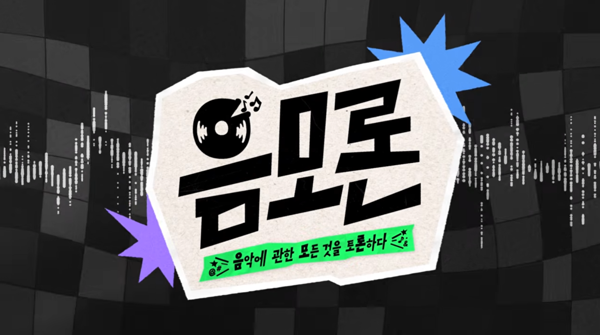
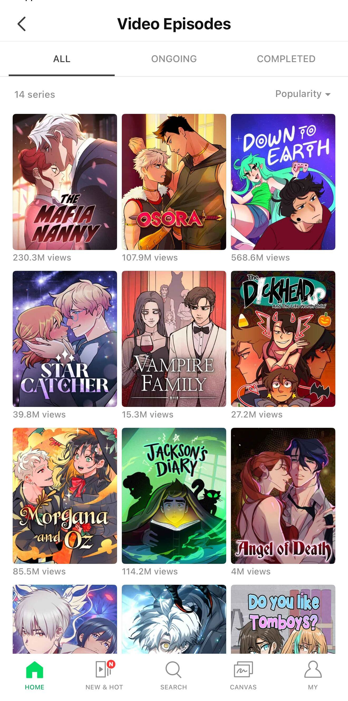

서로 다른 사업모델을 가진 플랫폼들은 왜 영상 콘텐츠에 주목하는 것일까?
사업자마다 추구하는 목적과 차별화 전략은 다르지만, 그 이면에는 이용자의 시간을 사로잡고 마음을 얻기 위한 공통된 고민이 자리하고 있다.
영상 플랫폼 사업자들의 콘텐츠 확보 경쟁은 새로운 현상이 아니다.
넷플릭스를 비롯한 OTT 사업자들은 독점 콘텐츠를 경쟁력의 핵심 무기로 활용해 왔다.
하지만 OTT 시장이 성숙기에 접어들면서 콘텐츠를 둘러싼 경쟁 환경도 한층 치열해지고 있다.
플랫폼들이 인기 콘텐츠를 독점 제공함에 따라 이용자들의 복수 OTT 구독으로 인한 비용 부담이 커졌고,
보고 싶은 콘텐츠에 따라 서비스에 가입과 해지를 반복하는 구독 로테이션 이용 행태도 나타나고 있다.
새로운 가입자를 유치하는 것만큼 기존 이용자가 구독을 유지할 이유를 지속적으로 제공하는 것도 중요한 과제가 되고 있다.
이러한 경쟁 환경 속에서 OTT 사업자들이 주목한 것이 라이브 이벤트다.
넷플릭스는 2025년부터 월드 레슬링 엔터테인먼트(World Wrestling Entertainment; WWE)의 인기 프로그램
‘Raw’를 매주 생중계하고 미국프로풋볼리스(National Football League; NFL) 경기와 복싱,
메이저리그 베이스볼(Major League Baseball; MLB) 특별 경기 등으로 중계 영역을 확대했다.
국내에서도 티빙이 KBO 프로야구, 쿠팡플레이가 잉글랜드 프리미어리그(English Premier League; EPL) 중계권을 확보하며 스포츠 콘텐츠 경쟁을 벌이고 있다.
2026년 3월, BTS 완전체 컴백 공연을 넷플릭스에서 글로벌 생중계한 것도 라이브 콘텐츠 확보 전략의 일환으로 해석할 수 있다.
라이브 콘텐츠는 단순히 시청자 수 이상의 가치를 갖는다.
영화나 드라마와 달리 스포츠와 공연은 특정 시간에 이용자를 플랫폼으로 불러 모으고, 실시간으로 함께 시청하는 경험을 제공한다.
특히 스포츠는 정기적으로 반복되는 경기 일정을 통해 이용자의 지속적인 방문을 유도할 수 있으며,
공연은 아티스트를 중심으로 형성된 팬덤을 플랫폼으로 끌어들이는 역할을 한다.
이용자 제작 콘텐츠를 중심으로 성장한 유튜브는 2025년 NFL 정규시즌 개막 주간 브라질 경기를 전 세계에 무료로 독점 생중계했으며,
2029년부터 아카데미 시상식의 글로벌 독점 중계권도 확보했다.
세계적인 음악 축제 코첼라의 독점 생중계 계약도 2030년까지 연장했다.
대형 라이브 이벤트에 크리에이터 콘텐츠, 하이라이트, 실시간 참여 기능 등을 결합해 기존 방송과 차별화된 시청 경험을 제공하겠다는 전략이다.
영상이 본업이 아닌 사업자들의 움직임도 주목할 만하다.
스포티파이는 음악 서비스를 넘어 팟캐스트와 오디오북으로 콘텐츠 영역을 확장해 가고 있으며,
최근에는 영상 팟캐스트를 주요 성장 영역으로 육성하고 있다.
실제로 이용 규모도 빠르게 확대되고 있는데, 스포티파이는 2026년 5월 전 세계에서 영상 팟캐스트를 한 번 이상 시청한 이용자가 누적 5억 명을 넘어섰다고 발표했다.
자체 영상 콘텐츠의 제작과 외부 플랫폼을 통한 유통에도 적극적이다.
국내에서는 음악 산업의 다양한 이슈를 토론하는 자체 웹예능 <음모론>을 제작해 유튜브에 공개했다.
2025년에는 넷플릭스와 영상 팟캐스트 공급 계약을 체결하고, 스포츠와 문화, 미스터리 등 다양한 장르의 콘텐츠를 제공하기로 했다.
넷플릭스는 기존 영화와 드라마 이외의 콘텐츠를 확보하고, 스포티파이는 자사 콘텐츠의 이용자 접점을 확대하는 전략이다.
이는 콘텐츠를 독점적으로 보유하는 데 그치지 않고, 다른 플랫폼과의 협력을 통해 콘텐츠의 가치를 높이려는 움직임으로 볼 수 있다.

[그림 1] 스포티파이의 웹예능 <음모론> 이미지
(출처: 스포티파이 홈페이지 화면 갈무리)
웹툰 플랫폼 역시 기존의 사업 영역을 확장해 영상 콘텐츠 확보에 나서고 있다. 그동안 네이버웹툰과 카카오엔터테인먼트의 인기 웹툰, 웹소설이 다수의 드라마, 영화, 애니메이션 작품으로 확장됐다. 최근에는 자체 플랫폼에서도 영상 콘텐츠를 소비할 수 있도록 서비스를 확대하고 있다. 네이버웹툰은 기존 웹툰을 영상으로 즐길 수 있는 ‘Video Episodes’를 도입하고, 창작자와 이용자가 숏폼 콘텐츠를 제작, 공유하는 ‘컷츠’를 선보였다. 카카오픽코마 역시 2026년 일본 픽코마 앱에 숏폼 애니메이션을 제공하는 ‘ANIME’ 서비스를 도입했다. 이는 외부 플랫폼에 IP를 공급하는 데서 나아가, 자체 플랫폼의 콘텐츠 소비 경험을 확장하고 이용자 참여를 활성화하려는 전략으로 해석할 수 있다.

[그림 2] 네이버웹툰의 ‘Video Episodes’ 화면 이미지
(출처: 네이버웹툰 화면 갈무리)
네이버는 라이브 스트리밍 플랫폼
‘치지직’을 통해 영상 콘텐츠 경쟁에 적극적으로 참여하고 있다.
게임 스트리밍을 중심으로 출발한 치지직은 스포츠와 e스포츠 중계로 영역을 확대하고 있으며,
크리에이터와 함께 경기를 시청하고 실시간으로 소통하는
‘같이보기’를 강화하고 있다.
이는 단순히 영상 콘텐츠를 확보하는 것을 넘어 크리에이터와 커뮤니티를 결합한 차별화된 시청 경험을 제공하려는 전략이다.
이러한 움직임은 영상 콘텐츠를 둘러싼 산업의 경쟁 구도가 달라지고 있음을 보여준다.
OTT는 스포츠와 공연 등으로 콘텐츠 영역을 넓히고, 유튜브는 대형 라이브 이벤트를 확보하며 기존 방송의 영역으로 진입하고 있다.
반면 음악과 웹툰 플랫폼은 영상 콘텐츠를 기존 서비스와 결합해 이용자들에게 새로운 이용 경험을 제공하려 한다.
영상 콘텐츠를 중심으로 서로 다른 산업과 서비스의 경계가 만나고 있는 것이다.
경쟁 방식도 다양해지고 있다.
독점 콘텐츠 확보뿐 아니라 외부 플랫폼과의 제휴, 이용자와 창작자의 콘텐츠 생산 참여 등으로 콘텐츠 확보와 유통의 방식이 확대되고 있다.
영상 콘텐츠를 둘러싼 경쟁은 더 이상 특정 사업자들 사이의 경쟁이 아니라 다양한 플랫폼이 참여하는 복합적인 경쟁 구도로 변화하고 있다.
플랫폼마다 영상 콘텐츠를 확보하는 목적은 다르다.
누군가에게는 신규 가입자 유치와 기존 이용자의 구독 유지를 위한 핵심 상품이고,
누군가에게는 IP 가치를 확장하고 팬덤을 강화하는 전략적 자원이다.
목적과 이유는 다르지만, 영상 콘텐츠를 통해 이용자의 시간과 관심을 확보하고 이를 지속적인 서비스 이용과 수익으로 연결하려 한다.
이용자가 잠자는 시간까지도 경쟁 대상이라고 언급했던 넷플릭스 공동창업자의 이야기처럼 플랫폼 사업자들은 이용자의 시간을 쟁취하기 위해 치열하게 경쟁하고 있다.
최근에는 OTT뿐 아니라 음악, 웹툰 등 다양한 플랫폼 사업자들이 영상 콘텐츠 확보 경쟁에 뛰어들면서 사업자 간 경계도 점차 희미해지고 있다.
그렇다면 수많은 콘텐츠 유형 중 왜 영상 콘텐츠일까?
영상 콘텐츠는 플랫폼 사업자에게 어떤 의미일까?
영상은 이미지와 소리, 이야기를 결합해 짧은 시간에 정보와 감정을 전달할 수 있는 형식이다.
특히 추천 알고리즘이 고도화되면서 이용자가 적극적으로 탐색하지 않아도 취향에 맞는 콘텐츠를 쉽게 발견하고 소비할 수 있게 됐다.
다양한 이용 상황과 욕구에 대응할 수 있다는 점도 영상 콘텐츠의 강점이다.
잠깐의 여유 시간에는 숏폼을 즐기고, 이야기에 깊이 몰입하고 싶을 때는 영화나 드라마를 시청하며,
정보가 필요할 때는 영상 팟캐스트를 이용할 수 있다.
영상이라는 형식 안에서 이용자의 시간과 욕구에 따라 서로 다른 소비 경험이 만들어지는 것이다.
나아가 영상 콘텐츠는 감정적 만족을 제공할 뿐 아니라 공유와 실시간 참여, 팬덤 활동을 통해 사회적 관계를 형성하는 수단이 되기도 한다.
결국 영상 콘텐츠는 다양한 이용자 욕구에 대응하고 서비스와의 접점을 확대할 수 있는 전략적 자원이다.
서로 다른 플랫폼들이 영상 콘텐츠에 주목하는 이유도 여기에서 찾을 수 있다.
영상 콘텐츠를 둘러싼 경쟁이 확대되면서 산업의 경계뿐 아니라 사업자 간 관계도 달라지고 있다.
넷플릭스와 유튜브는 서로 다른 사업모델에서 출발했지만 이제 스포츠와 공연, 대형 라이브 이벤트 등을 놓고 경쟁한다.
반면 스포티파이는 자체 영상 콘텐츠를 확대하면서도 넷플릭스와 유튜브를 새로운 유통 경로로 활용하고 있다.
웹툰 플랫폼 역시 외부 영상 사업자에 원작 IP를 공급하는 동시에 자사 서비스에서 영상 콘텐츠를 소비할 수 있는 환경을 구축하고 있다.
콘텐츠 공급과 유통의 경계가 흐려지는 가운데, 플랫폼 사업자 간 경쟁과 협력이 동시에 나타나는 복합적인 구조가 형성되고 있는 것이다.
경쟁의 방식도 한층 복잡해지고 있다.
대형 스포츠 경기나 공연처럼 희소성이 높은 콘텐츠는 독점 중계권을 확보하는 사업자에게 이용자를 집중시킬 수 있지만, 높은 비용을 수반한다.
반면 크리에이터와 이용자의 참여를 기반으로 하는 콘텐츠는 독점권 확보보다 콘텐츠 생산과 소비가 지속적으로 이루어지는 것이 경쟁력으로 작동한다.
동일한 영상 콘텐츠라도 어떤 플랫폼에서 어떤 방식으로 소비되는지에 따라 이용자가 경험하는 가치도 달라진다.
영상 콘텐츠를 둘러싼 경쟁이 콘텐츠 확보 능력뿐 아니라 이를 유통하고 소비하는 방식으로 확장되고 있는 셈이다.
영상 콘텐츠 확보 전쟁은 앞으로도 계속될 것이다.
그러나 단순히 이용자의 시간을 오래 점유하는 것이 지속가능한 경쟁력을 의미하지는 않는다.
콘텐츠를 확보하는 것과 이용자의 충성도를 확보하는 것은 다른 문제이기 때문이다.
결국 이용자가 각 플랫폼의 특성에 맞는 콘텐츠와 서비스를 통해 어떤 가치를 경험하고,
다시 방문할 이유를 발견하는지가 앞으로의 경쟁을 좌우할 것이다.
이용자의 시간은 잠시 훔칠 수 있어도 결국 그들의 마음을 얻어야 하기 때문이다.
참고문헌
- 네이버웹툰(2025. 8. 19). 읽는(Read)웹툰에서 보는(Watch)웹툰으로…네이버웹툰 영어 서비스서 ‘비디오 에피소드’ 시범 도입.
- 네이버웹툰(2026. 6. 24). 네이버웹툰, 원작자 승인한 IP로 숏애니 만든다… ‘컷츠메이크’ 출시.
- 쿠팡(2025. 8. 28). 4K에 이어 ‘해설 선택·멀티뷰’까지… 쿠팡플레이, PL 중계 혁신 가속.
- KBO(2024. 3. 4). KBO, CJ ENM과 2024~2026 유무선 중계방송권 계약 체결.
- Netflix(2024. 1. 23). Long-term deal brings weekly live sports entertainment to Netflix.
- Netflix(2026. 4. 2). Netflix steps up to the plate: MLB opening night on Netflix scores 3 million US viewers.
- Oscar(2025. 12. 17). The academy partners with youtube for exclusive global rights to the oscars and other academy content starting in 2029.
- PR TIMES(2026. 4. 27). 観るピッコマ、はじまる。新カテゴリ『ANIME』2026年5月下旬スタート.
- Spotify(2025. 10. 14). Spotify studios and the Ringer video podcasts are coming to Netflix.
- Youtube(2025. 9. 8). A record-breaking debut for the NFL on YouTube.